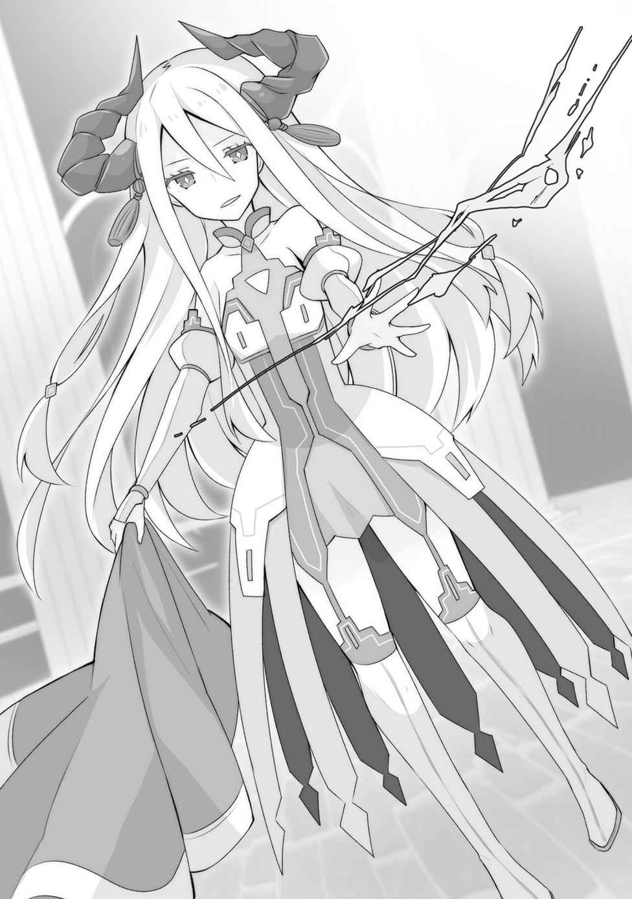

第二章 ③
さすがに夜の間はビーエも動かないだろうということで、近衛隊員の何人かは一度島に戻し、日の出まで休むことにした。ずっと何日間も船に揺られていたから、まだ疲れが残っていたようで、すぐに眠ってしまった。
レンに起こしてもらうと、ちょうど日が昇り始める時間。
ビーエがどのタイミングで動くかはわからないが、まだ時間はあるだろう。
俺は準備のために一度開拓村に入った。
「カイ────！」
俺が村に入ると同時に、エネルが飛び出してきた。
昨日、米を渡したときの再現だ。ぶつかるように抱き着いてくるのを、サッと躱すと、エネルは不満そうに頬を膨らませた。
「なーんで、よけるの！ 今日は最高のお知らせがあるのに！」
「昨日の今日で、なにがあったっての」
そう訊ねると、エネルは嬉しそうに口角を緩ませて、それを発表した。
「パンパカパーン！ おめでとうっ！ ついに、レベル40になりましたー！」
「40？ はやくね？ ついこないだ35になったばっかりだろ」
「お米がスペシャルキーアイテムだったからだよ！ カイが思い描く『文明』にとって大事なアイテムの一つが『米』だったってこと」
そりゃ、確かに米は切望していたけれども！
そのあたりレベルアップに加味されるのか。
「てか、レベル35になった時に、村に『学校』ができなきゃ次のレベルにならないって書いてなかった？」
「ああ、あれ。すぐ魔法学校ができたからねぇ。カイ、たまには村の中確認してよ」
「すまねぇ」
あれやこれやで忙しかったり、シエルのゲームやるのが忙しかったりして、確認不足だった。魔法学校なんてのが出来てたのか。大きい建物はなかった気がするから、ほんの小さな塾ぐらいの規模なのだろうが、それでも学校は学校ということか。
「まあ、とにかくありがたい。なんか新しい能力は増えたのあるの？」
「へっへっへ。それがですね大将。待望のアレ……ですよ。アレ」
「アレか！」
乗ってはみたが、アレってなんだろ。エネルは言葉が足りなくていけない。
「そう、『村の出口（西）』だよ！ ってことで、ハイ。これで北、東、西と全箇所ワープポイントとして使えるからね。南は通常出口専用だから、間違えないように気を付けて」
「グッドタイミング！ 今回、杭が一本じゃ、ちょっと心許なかったんだよ」
村の出口（北）は島の大樹の根本に刺してある。完全に本拠地へ戻る時専用だ。
だから、今までは村の出口（東）一本で運用していた。まあ、一本あるだけでも、危険な状況から安全帯まで戻ったり、一人先行してもらって、後からワープしたりと、いろいろな使い方ができたが、これが二本余裕があると全く違った使い方ができる。
なにより、緊急脱出用に島の外、どこか安全な場所に一本刺しておくことが可能だ。そうすれば、万が一、島に神殿が兵力を整えて攻めてきたとしても、全員が安全に逃げることができる。だから、待望の能力だったのだ。
「ありがとうエネル！ よし、これがあれば、なんとかなるかもしれん……！」
「あー、カイ。もう一個能力発現したんだけど──」
「悪い、急いでるから、これが終わったら聞くよ！」
今はルキアを助けることだ。新しい杭があれば、最悪俺のことがバレたってかまわない。
逃げることができるというのは、これほど心に余裕が生まれるものなんだな。
俺は一度、島に戻り、尾行メンバーを選定した。
特級審問官であるビーエの尾行は、大神殿の立入禁止区域に入ることになるだろう。つまり、巡礼者の振りをしてでは限度がある。
「というわけで、これを着て侵入するのである程度演技ができないと難しい」
これとは、翼人の村で女神官から奪った神官服だ。神官服はデザインがほとんど共通だから、これを着ていれば怪しまれる心配は少ないはずだ。
あの時レンが「歩く身分証明だから絶対奪っておくべき」と提案したから、貰っておいたのだけど、まさかこんな形で役に立つとは、何が幸いするかわからないものである。
「じゃあ、一人は私で決定ですね」
ユーリが自信満々で手を挙げる。
「確かにユーリは本当に祝福者だからな。演技力という点でも折り紙付きだし」
「ちょっと、カイ様それどういう意味ですか？」
「なんでもない。さて、あと誰にしようか」
ユーリが突っ掛かってきたのを華麗にスルーし、もう一人を決めたい。
「……私。私しかいない」
「アビスかぁ。うん、一人はアビスにしよう」
「……いいの？ またダメって言われるかと思った」
「たぶん電撃に頼る場面が多いだろうから」
俺とユーリが祝福者なのだし、フードを被せてアビスを連れていても、そう不審がられないだろう。アビスがいれば電撃魔法でリスクなく相手を無力化できる。こういう侵入作戦では役に立ってくれるはずだ。
問題は、魔法使いが入り込むことで、何かセキュリティが働かないかどうかだが、これはもう賭けるしかない。もうこの局面では、魔法使いなしでは難しいだろうし。
「わたくしちゃんは待機ですか？」
「いや、レンも付いてきてくれ。祝福者の巣窟ではレンがいてくれたら助かるだろう」
「イエス、マイロード」
「まあ、こんなとこかな。カエデやサラさんやファウゼル、エドワードさんもいたら心強いけど、とりあえず見つからずに奪還するのが目的だから」
いざ、戦いとなったら魔法使いの独壇場だ。祝福者が使う術はゲームでいうならほぼすべて「補助魔法」。攻撃魔法のエキスパートに勝てる道理はない。
とはいえ、今回はアビスとレンだけでもおそらく過剰戦力だろう。地味に盾の神の祝福者であるユーリがいるのも大きい。物理防御だけでなく、祝福の能力も弾くことができるからだ。個人的にはカエデを連れて行くかは悩むが、エドワードの手前、あまり危険なことに巻き込みたくはない。
「カイ、私はどうしたらいいの？」
リーベルがクイクイと服のすそを引っ張る。
「リーベルは大聖堂の前まででいいよ。ビーエの場所を最後に確認したら、そこで別れる」
「わかったよー」
俺は、事前にコロモに用意してもらっていた神官服をメンバーに渡した。
いちおう主要メンバーの分は用意しておいたが、元服があれば完全再現できるコロモの技量には感服するばかりだ。
「どう？ 似合う？」
真新しい神官服に袖を通すと、不思議な気分になった。本当ならば、俺はあの祝福の儀式の後、こんな服を着て神官として街で働く……そんな予定だったのだ。
それが、こんな形で着ることになるとは。
「ふっふふ。カイ様、意外とお似合いですわ。私は、どうですか？」
「ユーリは何を着ても美人だよ」
「あら～、カイ様がお世辞を言うようになるなんて」
別にお世辞じゃないんだけど。実際、ユーリは目が覚めるような美人なんだから。
「……マスタ、私はどう？ 着慣れないから、なんか変な感じ」
「アビスも可愛いよ。……って、あ！ その姿のまま着ちゃマズくない？」
「……あっ、そうか」
アビスは魔法を使う時に「大人の姿」になる必要がある。普段着ている服はなぜか一緒に大きくなるから問題ないが、神官服はダメだろう。下手したらはじけ飛ぶ。
幸い、サラ用の神官服があったので、大人の姿になってもらってから着替えてもらった。
「……どう？」
「うーん、いいね。見慣れないから変な感じ」
大人の姿のアビスは、内面はほとんど変わらないくせに、妙に色っぽいから困る。
「わたくしちゃんはどうですか！」
「うん、可愛い可愛い。て、ファッションショーやってる場合じゃないんだけど」
「てへっ、そうですね」
着替えた俺たちは全員の服装をチェックした。全員特におかしいところはない。
アビスとレンはフードを被り、レンは尻尾もスカートの中に隠した。さしあたり、問題はなさそうだ。
あとは、いつでも出てきてもらえるように開拓村に戦士君たちを待機させ、宿に戻った。
日が昇るまで待って、宿を引き払い、聖アーサー大聖堂の近くまで移動する。
ビーエは大聖堂の横の建物にいたはずだ。動き出したら尾行開始だ。
「じゃあ、リーベル。頼む」
「了解！ じゃあいくね『鵜の目、鷹の目、神様の目！』」
リーベルが探し物の神ミスラの能力を発動する。目標は特級審問官ビーエ・クラウザー。とりあえず、昨日の深夜にいた場所から動いていなければいいが。
「見つけた！ って、もう動き出してるよ、カイ～」
「マジでか！ じゃあ行くか。っと、その前にリーベルを島に送ってくる」
俺は物陰に「村の出口」の杭を刺し、リーベルを連れて一度島に戻り、そこから、また村の出口経由で聖都へと戻る。開拓村の面積が大きくなっているので、実はけっこう走る必要があり疲れる。
「ただいま。じゃあ、改めて行こう。まだ出てきていない？」
「マイロード。もう出ていて、大聖堂のほうに入ってっちゃいましたよ！ ついさっき！」
「マジかよ、入れ違いか！ 行こう！」
開拓村が広くなった弊害というべきか、「村の出口」経由のワープは、全力で走っても五分程度かかってしまうのだ。つまり、瞬間移動であって瞬間移動ではない。
今度エネルに、なんとかしてもらえないか相談してみよう。
ビーエがいた建物と、大聖堂の入り口（神官用のものらしい小さい扉）は、別に立入禁止区域というわけではなさそうだが、知らない場所の知らない建物に侵入するのはやはり緊張する。神兵はそこら中に立っているから、声を掛けられないか心配になる。
「よし、じゃあそこの扉だな。リーベル連れてこなかったのは失敗だったか」
言うまでもなく、大聖堂の内部の構造のことは誰も何も知らない。
一度見失ったビーエを見つけるのは苦しいかも。
「わたくしちゃんがいますから、たぶんなんとかなりますよ。よほど運が悪くなければ」
「そうなのか？ まあ、いずれにせよ行くしかないか」
俺たちは大聖堂の扉を開いた。中は三方向に通路が延びている。早速三択だ。
運よく、見える範囲には誰もいない。
「とりあえず、怪しい動きをしないように、自信満々でウロウロしよう。ダメだったらトイレとかでまたリーベル呼んできて、術を使ってもらう」
すでにグダグダになり始めているが、見つからないように尾行することの難しさを実感している。まして、ここは敵地の真っただ中だ。
「ビーエが扉に入ったところ、わたくしちゃん見てましたけれど、たぶんここは左ですよ。そこから先はわかりませんけど」
「おお、それだけでも十分」
迷っている時間はない。俺たちはさっそく歩き出した。
ビーエが視界に入れば、レンがすぐに気付くし、レンは耳も抜群にいいから、声が聞こえればなんとかなるのだという。
そうして、しばらくウロウロ歩いてみたが、いない。
すでに地下に入られてしまったのだとしたら失敗だ。地下への入り口はどこにあるかわからないのだから。
途中、何人かの神官とすれ違ったが、普通に会釈するだけで誰も話しかけては来なかった。こちらは心臓バクバクものだったが、神官だらけのこの場所では、いちいち外部の神官のことなど気にしないのかもしれない。話しかけられた時のために、偽名まで事前に考えておいたのだが、この分だと不要だっただろうか。
魔法使いセンサー的なものも懸念していたが、それもやはり杞憂だったようで、今のところそれらしい動きは見られない。
「あー、ダメだ。やっぱり一回リーベル連れてくるわ」
大神殿は広く、部外者にとってはまるで迷宮のようだ。
俺が諦めかけたその時、レンがフードの下の耳をピンと立てて、全員の動きを制した。
「……静かに！ リーちゃん呼ぶのは、ちょっと待って下さい」
瞳を閉じて音に集中するレン。俺には何も聞こえないが、レンには聞こえるのだろう。
「聞こえます……向こうですね。付いてきてください」
「見つけたのか？」
「おそらく。尾行します」
レンの後ろを歩く。どうやら、耳だけで距離を測っているようで、こちらからビーエの姿を捉えることはないが、しっかり尾行はできているらしい。
いくつかの扉を抜けると、大聖堂の礼拝室に匹敵するほど広い区域に出た。
部屋の中心にポツンと祠が立っており、それ以外は何もない空間だ。
正確には、祠の上に建物を建てたといったほうが近いかもしれない。一見しただけで異様さを感じる場所だ。レンによると、ビーエはその祠の中に入っていったらしい。
「……これ、島の遺跡と同じやつじゃ」
「確かに似ていますね」
石でできた祠には、ぽっかりと地下へ続く階段が見えている。柱に刻まれた模様や文字らしきものは、島にある遺跡と同じものだ。遺跡は旧文明の遺産のはずだが──
俺たちが入ってた扉からはちょうど死角になっていて、向こうは気付いていないが、祠の入り口の前で警備の神兵が二人、見張りをしている。
ここまでくれば電撃で眠らせてもいいが、どうするか。
「ビーエがあの中に入ったのは間違いないんだな？」
「間違いないです。ビーエの他に二人いましたけど」
全部で三人？ ローザの話では、そんなにいろんな人間は入ってこないという話だったが……。いや、途中まで一緒に入ってくる人間は元々いたのかもしれない。なにせ、ローザは目が見えてなかったのだから。
「なんにせよ、地下への入り口はあの場所で間違いないだろう。行こう」
そう思った矢先、
「おい！ お前たち！ この場所でなにをしている！ ここは立ち入り禁止区域だぞ！」
巡回していたらしい神兵に見つかってしまった。
「……どうする？ マスタ」
アビスが袖を引くが、暴力で対応するばかりでもあるまい。ここは人が多い、気絶させれば、すぐに人に見つかるだろう。そうなれば騒ぎになるのは間違いない。
「まかせろ」
俺は小さく呟き前に出た。連中は俺たちのことを、うっかり入り込んできた神官だと思っている。まさか、外部の人間だとは思いもしないはずだ。
「お勤めご苦労。私は審問官のエルヴィスだ。ビーエ様に頼まれて祝福者を連れてきたのだが、聞いていないか？」
「はっ！ いえ、なにも聞いておりませんが」
「すでに先に行っているのだろう？ 通らせてもらうぞ」
「しっ、しかし」
「聞いていないのか？ 五〇〇年ぶりに墓守が代替わりしたことを。それに伴い、中は大わらわなのだよ」
おそらく神兵たちは何も知らないだろう。だが、ルキアが来たことで人の出入りは、ローザの頃とは比べものにならないほど頻繁になったはず。そこを突く。
墓守という言葉は口からでまかせだが、祠の見た目が墓に似ているし、なかなかそれっぽいだろう。偽名を使うことも事前に考えておいてよかった。
「す、少しお待ち下さい」
神兵たちが、少し離れた場所で相談を始める。
おそらく、本来は誰も通してはならないという決まりなのだろう。
「……確かに人の出入りは増えた」「……ビーエ様もフードの人物を連れていた」「……本人に頼まれてるなら通してもいいだろう」「……すごい美人じゃないか？ あの子」
一部関係ないのも含まれているが、漏れ聞こえてくる単語から、どうやらうまくまとまりそうだ。
「では、お通り下さい」
俺たちは、無事に門兵をパスし、祠の中を進んでいた。
中は、薄明かりが付いており、ひたすら下り階段が続くが足元が見えないほどではない。壁の材質は、島の遺跡と同じビニールのような素材で、やはり地下水が染み出してこない作りのものなのだろう。
「先ほどは凄かったですねカイ様。私のこと演技が上手いだなんて、ご自分のほうがよっぽど上手ではないですか」
歩きながらユーリがクスクスと笑う。
ユーリから見ても上手だったなら、自信を持っていいレベルかもしれない。
「まあ、そのために神官服だって着てるんだからな。傷付けずに対処できるなら、それに越したことはないし」
「私は安直にやっつけてしまえばいいと考えてしまいました……」
「俺以外はだいたいみんな武闘派だよな……」
俺が指揮を執っていなければ、だいたいみんな「ぶっ殺しちまおう」みたいな方向に、流れていく節がある。レンですらそうなのだから、俺が舵を取らないといろいろ不味い。
「レン、どうだ」
「……けっこう先にいるようですが、まだ歩いていますね。これはかなり深いですよ」
「こっちに気付くかな」
「音は響いてますね……あ、一人足を止めました。他の二人はそのまま行くようです」
「気付かれたか」
一本道だから足音だけでもそれなりに響く。気付かれたとしても不思議ではない。
「まあ、いい。ここまでくれば後は力ずくだ」
「……じゃあ、足を止めた人は電撃でいい？」
「ああ、やっちまおう」
おそらく向こうはまだ、「誰かが入ってきた」程度の認識だろう。まさか、時の神の祝福者を奪いにやってきたとは想像すらしていないはずだ。
そのアドバンデージを生かして、先制攻撃でいくべきだ。
「この先。残響音の雰囲気からして広場です。その先で一人待っています」
「よし、アビスいきなりやれ」
「……了解」
階段を下りた先、開かれた扉の向こうは、島の遺跡にあった部屋と似たような作りの広場だった。学校の教室を二つ縦に並べた程度の広さだろう。
その先に、フードを被った人影が見えた。
おそらくは、ビーエの同僚の審問官だろう。あるいは護衛の神官ならば、盾の神の祝福者の可能性が高い。もしかすると、未知の祝福者である可能性もある。
いずれにせよ、油断はしないに越したことはない。
相手を視認したアビスが無言で電撃を発生させ、気絶させる程度の強さで放つ。
目で追えない速度で閃光を放ちながら、一条の雷がわずかに部屋を照らしながら奔る。
──しかし、その雷は、相手に触れることはなく、バチンという音と共に相手が発生させた「魔法」で相殺された。
そして──静寂に包まれる。
「……なんだ……？ 魔法……だよな？ 魔法使いなのか……？」
「……そうみたい」
考えておくべきだった。ビーエが護衛として魔法使いを連れている可能性も。
なぜか、神官の護衛は神官だろうと思い込んでいた。
フードの人物は、一歩前に出て口を開いた。
「マヌケな神官が迷い込んできたのかと思ったら、まさかまさか。この独特の術式、千年ぶりですかね──アビス」
その声は地下の密閉された空間に、不思議な残響音を伴い響き渡った。
「ふふ、久しぶりの再会ですね。私のこと、覚えているでしょう？」
不意打ちに近い形で魔法攻撃をされたのに、全く気にもしていないかのような軽い口調。
なにより、アビスの名前を知っている。まだアビスはフードで顔を隠しているのに、魔法だけで、それを看破できる存在なんて──
謎の人物が、そのフードを脱ぎ去る。
そこに現れたのは、輝くような白い髪と、ねじくれた二本の角。
その姿は、あの遺跡で発見した、人形と同じものだった。

「レプリカント……セレスティアル……？」
確か、アビスが、あの人形をそう呼んでいた。
そして、目の前の人物は、まさにあの人形そのものの姿で、俺たちの前に立ちはだかったいる。まさか、こんな形で生きているものに出会うなんて──
「……セレスティアル。壊れてないのもいたのね」
アビスが、驚きを隠せず狼狽える俺の前に出て、フードを脱いだ。
「それはこっちのセリフです。あなたたちは破滅の日にすべて残らず破壊されたはず」
「……知らないよ。私は生きている」
「まあ、いいでしょう。それで、何の用ですか？ そっちの人間があなたのマスター？」
「……そう。ここを通らせてもらうよ。セレスティアル」
アビスがこんなに流暢に話をするのを見るのは久しぶりだ。
まさか、ビーエが『悪魔』の姿である人造人間を連れているとは、想像を超えていたが、俺の目的はビーエを捕まえることだ。驚いている場合じゃない。
「ふふ、決戦仕様のレプリカントである私に、汎用型であるあなたが勝てるとでも？」
決戦仕様……？ なるほど、同じ人造人間でも用途の違いがあるのか。
「お前のマスターはビーエ・クラウザーなのか？」
俺はいちおう確認しておいた。レンによると、二人先行しているというから、もう一人のほうがマスターの可能性もある。
いずれにせよ、排除することには変わりないが。
「ふうん、私のマスターを知っているのですか？ その通り、彼が私のマスターです」
「そうか」
神殿のことがわからない。悪魔の定義ってなんなんだ。ビーエが変わり者なだけなのか。
そんなこと許されるのか、それとも案外もう誰も気にしていない部分だったりするのか。
「お前は一人、こっちは四人だ。決戦仕様だろうがなんだろうが、お前に勝ち目はない。道を通してくれないか？」
「通すわけがないでしょう？ 頭沸いてるんですか？ それに──私は強い！」
セレスティアルの周囲の空間が歪み、炎、雷、氷、風、そのすべてが混ざり合ったような、「力」が湧き起こる。
単一の属性ではない。あらゆる属性、あらゆる魔法を詰め込んだ混沌。魔力を強引に力に変換したなにかが、セレスティアルの周囲で渦巻いている。
湧き起こる力の影響か、セレスティアルの身体が地面から浮かびあがり、周囲の壁がその熱量で溶解し始める。
……なるほど、決戦仕様だ。
込められた熱量、その密度が、圧となってこちらにまで伝わってくる。
「レン、いけるか。本気を出していいから、さっさと終わらせよう」
「ふっふふ。初めてですね、マイロードがそう命令してくれたの」
「ユーリは俺を入れて盾を展開」
「はい！」
「……マスタ、私は」
「アビス、行けるか？ アレ、できるようになったんだろ。ビビらせてやれ」
「……うん」
戦いが始まる前に、俺は開拓村に移動して天使ちゃんを連れてきた。
「天使ちゃん、レンとアビスを強化して」
「オッサオサ～」
天使ちゃんがビビビとレンとアビスにビームを飛ばし強化する。それが終わったら、すぐに天使ちゃんは回収。
なにせ、半透明の天使ちゃんは物理攻撃は無効だが、魔法には弱いのだ。こんな魔法使い同士の戦いの場では、流れ弾で死ぬ危険すらある。
「では、獄炎の大魔導師たる、わたくしちゃんの力！ とくとご覧あれ！」
「なにが、獄炎の大魔導師ですか！ 死になさい！」
セレスティアルが、レンに向けて流星のような魔法を放つ。
それに反応したアビスが、即座に前に出て、腕を横薙ぎに振るった。
すると、掻き消されるようにセレスティアルの魔法は消滅した。
「え？ な、なな、なんですかそれは！ どうして私の魔法が？」
驚くセレスティアル。
出会い頭のアビスの電撃をあいつは魔法で相殺した。魔法を相殺する技を知らないのは明白だったのだ。
「驚いてる余裕あるの？」
魔法を消されたセレスティアルが狼狽えているうちに、一瞬で距離を詰めたレンが、その勢いのまま殴りつける。
セレスティアルは辛うじてガードしたが、レンは攻撃の手を緩めない。
レンは自称獄炎の大魔導師なはずなのだが、全然魔法を使う気配がない。完全に肉弾戦だ。おそらく、相手が苦手な方法で戦っているのだろう。
セレスティアルもさすがは決戦型というべきか、レンの攻撃をさばきながら、時折魔法も織り交ぜ応戦するが、レンのほうが一枚上手のようだ。
両手両足を使った攻撃の手を緩めぬまま、長い髪と尻尾を紅蓮の炎と化し、周囲に湧き起こるセレスティアルの魔法をことごとく叩き落としている。
俺でも、レンが本気で戦う姿を見ることはほとんどない。
アビスやエドワードやファウゼルと模擬戦をする時でも、相手を怪我させないようにと、どこか余裕のある戦いをすることが多いからだ。
なにせ、レンの魔法はこの世界の魔法とは同じようで違うもの。ファウゼルやエドワードが得意とする魔法を掻き消す技も効かないし、魔力もアビスと同じように底なし。
島で最強の魔法使いはレンなのである。
ほとんど防戦一方に見える戦いの中、アビスはタイミングよく電撃魔法を放ち助勢している。レンの攻撃で手一杯のセレスティアルは、アビスの攻撃をしのぐ余裕がない。
そうした、何度かの攻防の末、セレスティアルはついに地面に膝をついた。
「マイロード！」
そのタイミングでレンが俺を呼ぶ。
俺はすぐに察して、ユーリに術を解除させ、走って近付いた。
そして、セレスティアルに触れて叫ぶ。
「『てのひら開拓村！』」
瞬時に視界が反転。俺とセレスティアルだけで見慣れた開拓村へと移動した。
そして──
「あ……え……なに？ ち、ちからが……はいらな……」
膝をついていたセレスティアルが、地面に倒れ込む。
「レプリカントは、ここでは無力だからな。しばらく眠っていろ」
人間と違って、アビスやこいつは世界に遍在する「魔力」を常時取り込むことで活動している。だから、眠る必要もないし、魔法もほとんど無限に使える。
その代償として、開拓村のように魔力が存在しない場所では全く機能しなくなる。明確な弱点というわけだ。
「おー、本物じゃん。やっぱり生きてるやつのほうが可愛いね」
エネルが出てきてとぼけた言葉を漏らす。
「最初の感想がそれなのかい。まあ確かに可愛いけど……。そんなことより、エネル、ちょっとこいつ預かっといて！」
「本当は生物はダメなんだけど、人造人間はセーフかなぁ……カイがセーフならセーフかなぁ……」
「セーフだよ！」
というわけで、セレスティアルを置いて、元の場所に戻る。
「おつかれ、レン、アビス。怪我はなかったか？」
「ああー、わたくしちゃんとしたことが、少しだけ怪我したかも！」
「マジで？ どこ」
見ると、確かに無数の擦り傷ができている。まあ、あれだけ派手に戦ったのだから、これぐらいは当然かもしれない。
開拓村から僧侶ちゃんを連れ出し、レンを回復させる。
「アビスはどう？」
「……私はほとんど外から魔法撃ってただけだから、大丈夫」
「よし。いいコンビネーションだったな、二人とも」
戦闘時間はたぶん三分程度だっただろう。感覚的には、すぐ終わった。
お互いに強烈な破壊力を秘めた同士だから、そうそう長引かないものなのかもしれない。
「まあ、しかし時間を食った。行こう」
その場を後にし、さらに奥へと四人で歩き出す。
ビーエともう一人いたという話だから、あるいはまた戦いになるのかもしれない。
だとしても、もうすぐだ。
◇◆◆◆◇
「そこで、行き止まりですね」
階段をしばらく進むと大きな扉に行き当たった。
窓などもない、完全に向こう側から遮断されている扉だ。
おそらく、これがローザの言っていた『内側からしか開かない扉』だろう。
そして、おそらくビーエはこの先にいる。そして、ルキアもこの先にいるはずだ。
「どうなさいます？」
「開けるしかないだろう。ローザは扉は開かないと言っていたが、こういう時に対処する手段が俺たちにはあるんだしな」
俺はその場に「村の出口」の杭を一本突き刺し、一度島に戻った。
カエデを連れてくる為に島で残っていたみんなに状況を報告すると、エドワードとローザがいっしょに行きたいというので、連れてきた。
エドワードはカエデが心配で付いてきたのだろうが、ローザは一度も見たことがない、自分がずっと暮らしていた場所なのだ。その目で見てみたいというのもあるのだろう。
扉の前に戻り、ローザにいちおう確認する。
「ローザがいた場所ってここで間違いなさそうか？」
「う、うーん……そうだねぇ。実際にこの目で見たわけじゃないから確信はないけど……、匂いの感じがあの部屋と同じだから、たぶん。部屋に入れば間違いなくわかるはずよ」
「よし……じゃあ、カエデ頼む。扉に命を与えてくれ」
開かない扉ならば、自ら開いてもらえばいいのだ。
「じゃあ、いくよ。『仮初の命！』 あれ？」
「弾かれたのか？」
「うん。なんでかな」
「……なんらかの祝福が掛かっているのかもしれない」
その可能性はなくはないだろう。あるいは、また別の理由なのか。
「どうするか……」
ビーエが扉を開けて出てくるまで待つという手もある。
ある意味では確実だが、ルキアがどういう状況かわからないのだ。ないと思うが、思い詰めて自死を選ぶ……そんな可能性もなくもない。
なにより、俺自身がはやくルキアの無事な姿を見たいのだ。
扉さえ開けば──
「……マスタ、セレスティアルを使おう」
「え？」
「……セレスティアルは私たちを追い返したら、戻ってくるんじゃないの？」
「……！ そうか！」
盲点だった。セレスティアルが戻ってくれば、ビーエはこの扉を開くだろう。
まさか、倒されているとは思いもすまい。
俺は開拓村に戻り、セレスティアル・モックをエネルから受け取った。
この人形は、姿かたちは、先ほどの本物のセレスティアルと寸分も違わない。
「カエデ、こいつに命を吹き込むことができるか？」
「ふぇ？ この子に？ できると思うけど……」
「頼む」
要するに、セレスティアルが戻ってくればいいのだ。
あのセレスティアルと、カエデが仮初の命を与えたセレスティアル。
パッと見では、区別できないだろう。
「じゃあいくよー『仮初の命！』」
カエデの聖印が輝き、セレスティアルの等身大人形に命が吹き込まれる。
「お兄ちゃん、この子の名前は？」
「あー、セレスでいいんじゃないか」
「じゃあ、セレスちゃん！ 起きて、あの扉を開けるように頼んで！ えっと……」
「そうだな『マスター、戻りました。開けてください』でいいだろう」
「ヴィー。了解しました」
「しゃべった！」
いや、なぜか命を与えれば喋る前提で決めつけていたけど、冷静に考えると凄いことだ。カエデの能力もついにこの域にまで到達したのかと感慨深い。
単純に、素体がいいからなのかもしれないが。今までのゴーレムや船やらは、ヴィヴィヴィ以外喋らなかったし。
セレスは自然な動作で立ち上がると、扉を叩きながら『マスター、戻りました。開けてください』と言った。声は本物のセレスティアルのものと少し違うが、偶然なのか、かなり似た声が出せている。これなら気付かれないだろう。
「あ、カイくん。あの扉、マイクに向けて喋らないと向こう側に通じないわよ」
「あれ？ そうなの？」
扉を調べると、確かに横にインターホンのような装置が設置されている。
こんなものがあるとは、まるでシェルターだ。案外、本当にシェルターだったのかもしれない。扉も、祝福を受け付けない仕様だし、見るからに頑丈そうである。
「じゃあ、このボタンを押してからさっきのセリフを言うんだ。俺たちが隠れてからな」
「ヴィー。了解しました」
俺たちは見つからないように扉の影に隠れた。
セレス・モドキがプッシュボタンを押してから、『マスター、戻りました。開けてください』と部屋の向こうへ呼びかけると、扉がプシュっと軽い音と共に開かれた──